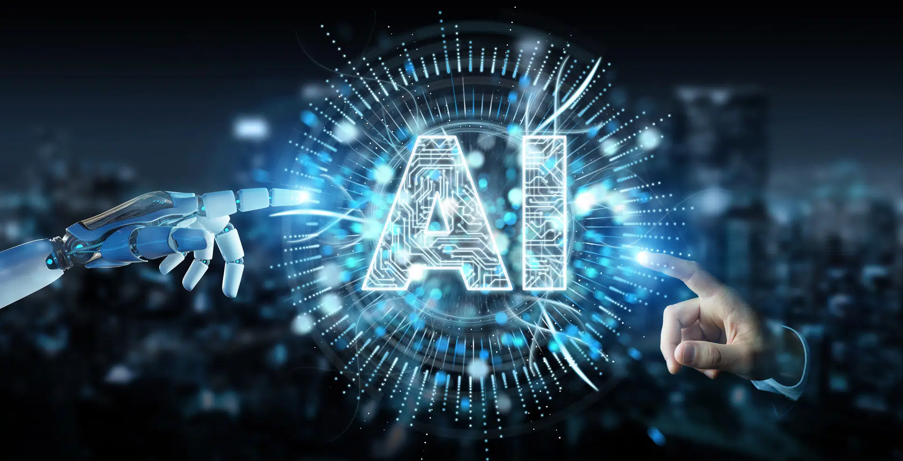

L’intelligence artificielle (IA)L’intelligence artificielle (IA) est en tête de la liste des principales tendances en matière de développement Web et n’est pas nouvelle pour nous, car elle nous entoure depuis un certain nombre d’années maintenant. L’IA nous a généralement aidés, notamment dans nos activités quotidiennes, tant personnelles que professionnelles. Pourtant, ces derniers temps, nous avons été témoins d’une croissance précieuse de la contribution régulière de l’IA ! Le ML (Machine Learning) et le NLP (Natural Language Processing) ont commencé à identifier des choses et à fonctionner au maximum de leur potentiel.
La liste suivante comprend les avantages de cette tendance unique en matière de développement web :
L’intelligence artificielle réduit le temps nécessaire à la réalisation d’une tâche. En d’autres termes, elle permet de gagner énormément de temps et de raccourcir le processus de travail.
L’intelligence artificielle réduit également la charge de travail des employés grâce à des services automatisés dans de nombreux secteurs du travail.
Elle s’est imposée comme une tendance précieuse du développement web qui peut fonctionner 24h/7j sans pause.
L’intelligence artificielle joue également un rôle très important dans toute procédure de travail. Elle est déployée parce que la probabilité de commettre des erreurs est négligeable. En outre, elle permet de réduire les erreurs, souvent commises par l’homme.